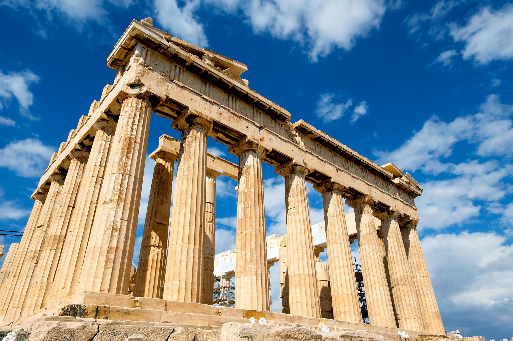

Le Parthénon est un temple emblématique de la Grèce antique, situé sur l’Acropole d’Athènes. Construit entre 447 et 432 av. J.-C. sous la direction de l’architecte Phidias et les architectes Ictinos et Callicratès, il est dédié à Athéna, déesse protectrice de la cité. Ce chef-d’œuvre de l’architecture dorique symbolise la puissance et le rayonnement culturel d’Athènes à l’époque classique. Il abritait autrefois une immense statue en or et ivoire d’Athéna Parthénos, réalisée par Phidias. Au fil des siècles, le Parthénon a été transformé en église chrétienne, puis en mosquée sous l’Empire ottoman, avant de subir des dommages importants lors d’une explosion en 1687. Aujourd’hui en ruines, il reste un symbole de la démocratie, de l’art et de la civilisation grecque antique, et est inscrit au patrimoine mondial de l’UNESCO.
Le Parthénon est l’un des monuments les plus emblématiques de la Grèce antique et un symbole de la démocratie, de la philosophie et de l’art, qui ont profondément influencé la civilisation occidentale
Situé sur l’Acropole, le Parthénon offre une vue panoramique incroyable sur la ville d’Athènes, la mer Égée et les montagnes environnantes. C’est un endroit parfait pour admirer la beauté naturelle et urbaine de la région.
